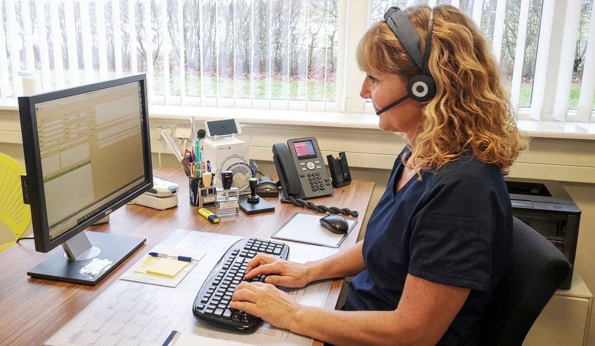

Mød holdet bag huset
Otte faste læger, konsultationssygeplejersker, bioanalytikere, lægesekretærer, fysioterapeut og praksismanager — vi arbejder tæt sammen om din behandling.
Vores otte faste læger
Alle vores faste læger er speciallæger i almen medicin. Du er tilmeldt huset — men vi tilstræber, at du så vidt muligt ser den samme læge.
Uddannelseslæger
Klinikken har løbende uddannelseslæger tilknyttet som led i speciallægeuddannelsen i almen medicin.
Konsultationssygeplejersker
Sygeplejerskerne varetager blandt andet årskontroller af kroniske sygdomme — fx blodtryk og hjerte, KOL, stofskifte (myksødem), knogleskørhed og diabetes — samt en lang række selvstændige konsultationer.

Laboratoriets faste hænder
Vores bioanalytikere tager blodprøver og EKG i husets eget laboratorium — med faste tider, så du undgår unødig ventetid.
Resten af holdet
Lægesekretærerne
Anette, Heidi og Anne Marie er dem, du møder i telefonen og ved skranken — og sammen med praksisassistent Pia hjælper de med tider, prøvesvar, attester og alt det praktiske.
Fysioterapeut
Michael Seiger Kristiansen er husets fysioterapeut og hjælper med undersøgelse, genoptræning og vejledning.
Praksismanager & medicinstuderende
Vores praksismanager holder styr på husets drift, og et hold af medicinstuderende hjælper til i telefonen, sekretariatet og laboratoriet.